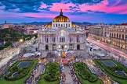
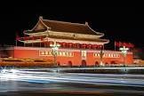

| Reino Unido |
36 millones de visitantes internacionales (un -4% que el año anterior) al Reino Unido pisaron la
isla que aún se encuentra estupefacta por los resultados del referéndum del Brexit y las consiguientes
elecciones y desacuerdos, desde Londres (siempre una buena idea para una escapada) a Glasgow (que se
puede visitar sin grandes gastos) pasando por atracciones naturales como La Calzada del Gigante.
|
|
| Tailandia |
38 millones de turistas internacionales (un 8% más que el año anterior), entre los que se incluyó en su
momento el equipo de rodaje de “Resacón 2”, viajaron a Tailandia, uno de los mejores destinos de fiesta del
mundo, uno de los 10 países más visitados de Asia, donde es posible comer por un euro o celebrar la Nochevieja
en alguna de sus mejores islas, como Koh Samui. |
|
| Alemania |
39 millones de viajeros internacionales (un 4% más que el año anterior) llegaron a la conocida como locomotora
económica de Europa, Alemania, y su capital, Berlín, donde además de museos hay muchas cosas que hacer gratis,
sin olvidar ciudades como Stuttgart o Dusseldorf. |
|
| México |
41 millones de visitantes internacionales (un 5% más que el año anterior) fueron recibidos por México, desde la
Riviera Maya y el crucerista caribe mexicano a los edificios coloniales y cantinas de Guanajuato y San Miguel de
Allende, son olvidar la extensa Baja California. |
 |
| Turquía |
46 millones de visitantes internacionales (un impresionante 22% más que el año anterior) se decidieron por un país
que vive en muchos sentidos a caballo entre Oriente y Occidente, entre Asia y Europa, Turquía, visitando Estambul
(incluso de manera breve pero gratuita con Touristanbul) y sus bazares pero también lugares menos turísticos, como
Ölüdeniz. |
|
| Italia |
62 millones de visitantes (un 7% más que el año anterior) llegaron al país de la pasta, la pizza y la imposibilidad
de hablar sin gesticular, Italia, visitando ciudades del norte como Padua o Venecia, las famosas “Cinque Terre”, la
fantástica Siena y la Toscana, el sur de Italia y, por supuesto, Roma y todas sus atracciones. |
|
| China |
63 millones de visitantes (un 4% más que el año anterior) internacionales llegaron a China, el país del que salen unos
cuantos millones de chinos que luego nos encontramos de turistas por todo el mundo. Fueron a la Gran Muralla China,
por supuesto, pero también a la región del Himalaya chino, a Hong Kong o a la china rural con pueblecitos poco visitados
por extranjeros. |
 |
| Estados Unidos De America |
80 millones de personas (un 4% más que el año anterior) viajaron al país occidental con tamaño de continente, Estados
Unidos, por sus museos, por la cinematográfica Nueva York o, sencillamente, por sus ciudades. |
|
| España |
83 millones de visitantes internacionales (un 1% más que el año anterior) llegaron a España, disfrutando de su gastronomía,
de la riqueza hitórica de sus ciudades y, naturalmente de destinos de sol permanente. |
 |
| Francia |
89 millones de visitantes (un 3% más que el año anterior) se vieron atraídos por Francia, desde ciudades como París a los
castillos del Loira. |
|